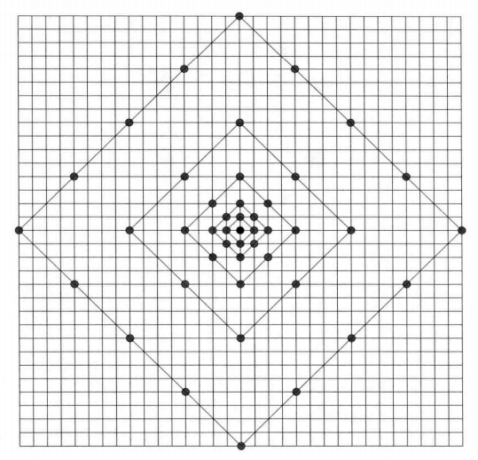

MV 搜索算法
搜索算法分为全搜索算法和快速搜索算法，全搜索算法对搜索窗内所有可能的位置计算匹配误差，得到全局最优 MV，快速搜索算法不搜索所有位置，得到局部最优 MV，快速搜索算法包括二维对数搜索算法、三步搜索算法以及 HM 中使用的 TZSearch 算法，HEVC 标准没有限制采取什么搜索算法（因为这个是编码端的事情，不会影响解码端）
AMVP 模式需要进行 MV 搜索，Merge 模式不需要进行 MV 搜索（否则 Merge 模式也要编码 MVD 了）
TZSearch
TZSearch 的代码见 HM 中的 **TEncSearch::xTZSearch 函数**，其操作流程如下
-
由 AMVP 确定搜索起始点
-
按照如下图正方形或菱形模板从中心到外端搜索完整个范围，选取率失真代价最小的点的作为预测 MV（步长从 1 开始，按照 2 的幂次递增）
菱形模板如下

正方形模板如下

-
若最优点步长为 1，则进行两点搜索，搜索尚未搜索的点中离最优点最近的两个点，示意图如下

如最优点为 2，则搜 a，b，若最优点为 6，则搜 e，g
-
若最优点步长大于某个阈值，则
- 以该最优点为中心，在一定范围内做全搜索，找到此范围内的最优点
- 以更新后的最优点为中心重复 2-4.1，若最后找到的最优点还是这一点则停止搜索，若不是则继续以更新后的最优点为中心重复 2-4.1 直到两次搜索收敛于相同的最优点
QA
Q：MV 搜索和 MV 预测有什么区别？
A：MV 搜索不是 MV 预测，MV 预测本质上是预测 MV 搜索的结果，MV 搜索是比较参考图像中的块与当前块之间的率失真误差然后选择失真最小的 MV，这里的 MV 是直接计算两个块之间相对位移得到的而不是拿那个块的 MV 作为当前块的 MV！此时也不考虑参考图片的 PU 划分，因为是拿当前图片的 PU 通过 MV 反向映射到参考图片上的一块区域，然后拿那块区域减去当前 PU 区域计算率失真。